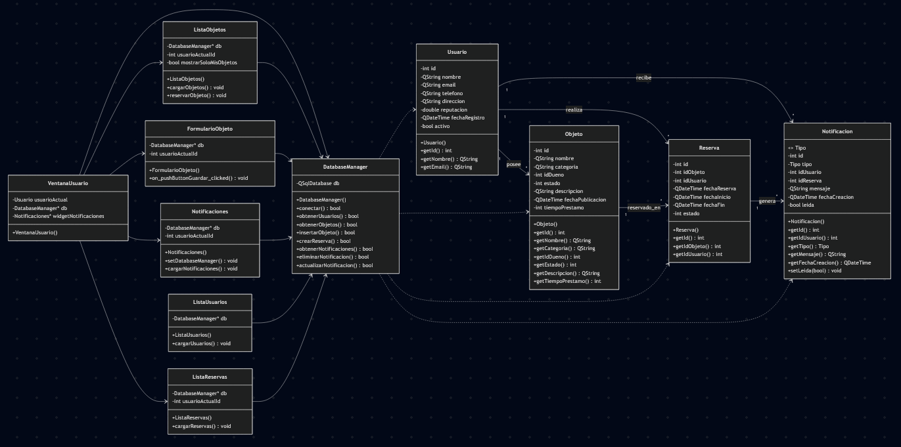
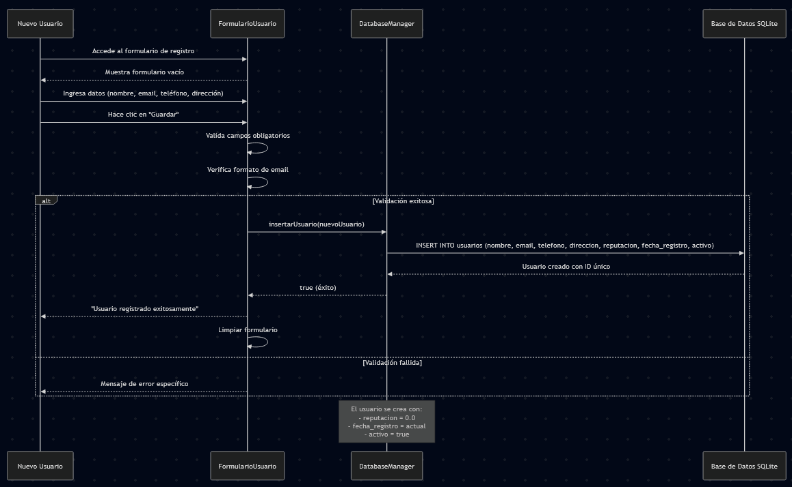
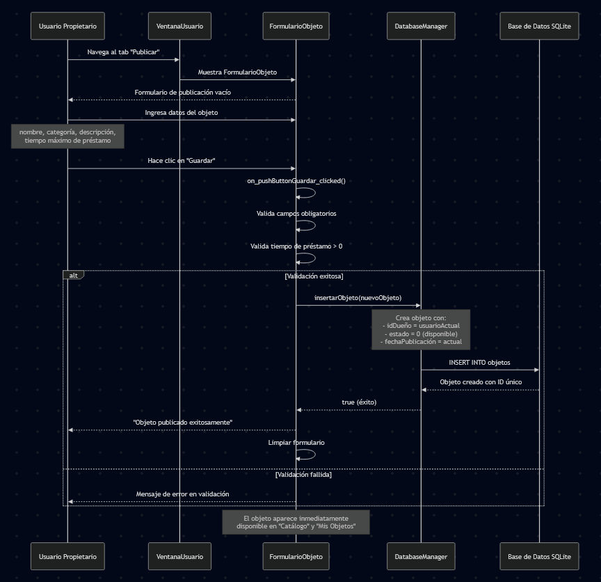
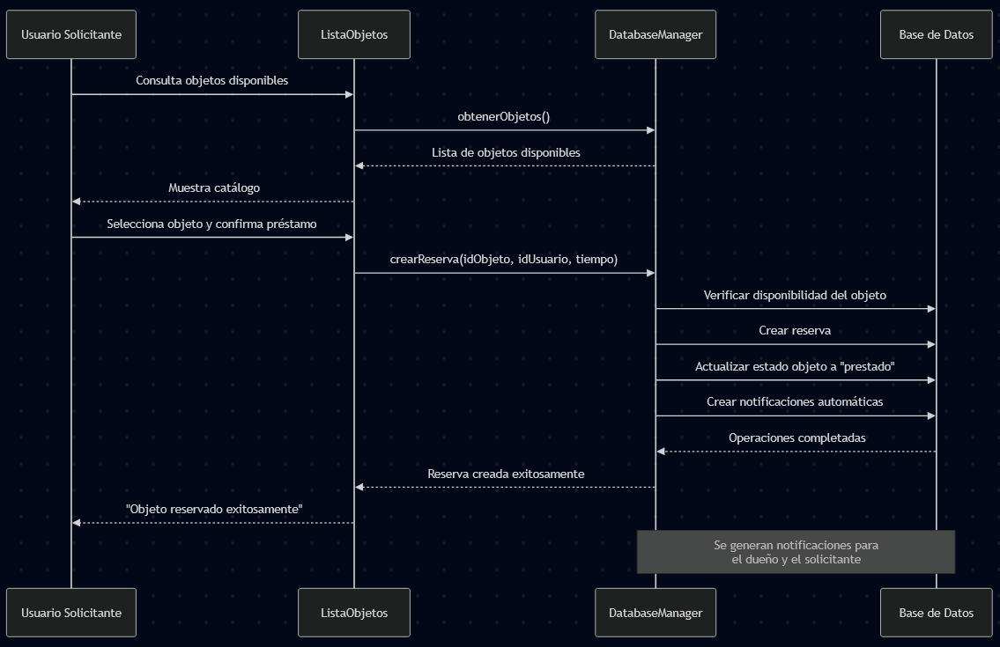
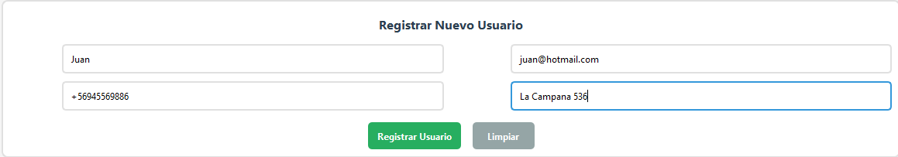
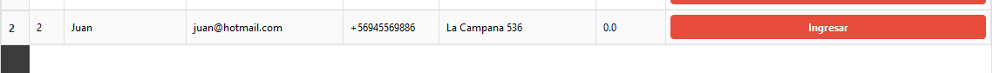
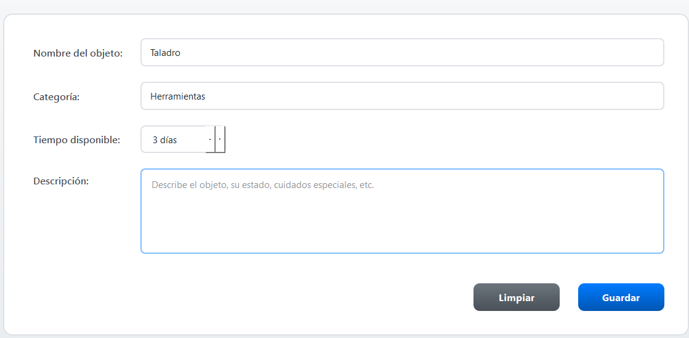
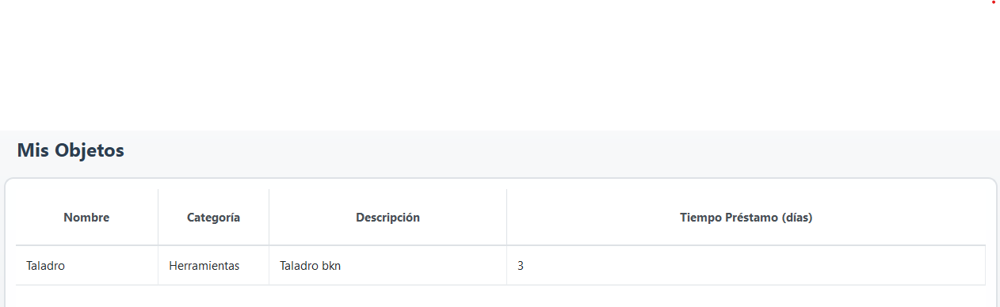
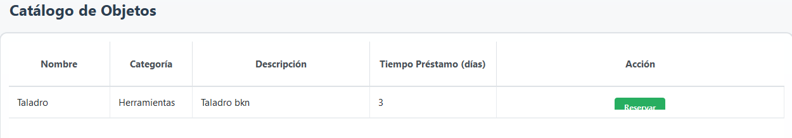
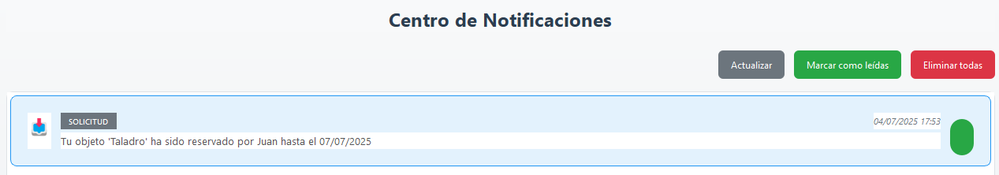

1. Descripción del Problema
En muchos hogares se compran herramientas o equipamiento puntual (taladros, escaleras, cámaras, juegos de mesa)
que luego pasan la mayor parte del tiempo sin uso. Esto genera desperdicio de recursos, espacio y dinero, además
de aislarnos de los vecinos. Si bien existen redes sociales como Instagram o Facebook donde se puede pedir prestado
a algún amigo mediante un post, las personas no le dan ese uso a sus redes sociales.
No existe hoy una plataforma sencilla que permita a la comunidad publicar objetos que estén dispuestas a prestar y
gestionarlos de forma transparente (fechas, estado, recordatorios). Nuestra solución cubre la necesidad de pedir
prestado algo a algún vecino de la comunidad de manera responsable, confiable y formal, además de compartir recursos
de forma económica y ecológica, al tiempo que fomenta el sentido de comunidad.
2. Análisis del Sistema
2.1 Entidades Principales
El sistema está compuesto por las siguientes entidades:
- Usuario: Miembros de la comunidad que pueden prestar y solicitar objetos. Incluye información de perfil, dirección para la entrega, y un sistema de reputación basado en el comportamiento histórico.
- Objeto: Elementos que los usuarios están dispuestos a prestar. Cada objeto tiene una categoría, descripción detallada, estado actual y tiempo máximo de préstamo.
- Reserva: Representa la transacción de préstamo entre usuarios, incluyendo fechas de inicio y fin, responsable del préstamo y estado de la reserva.
- Notificación: Sistema de comunicación para informar sobre vencimientos, confirmaciones de reserva y otros eventos importantes.
2.2 Arquitectura del Sistema
El sistema implementa una arquitectura orientada a objetos con patrón MVC (Modelo-Vista-Controlador):
- Modelos: Clases que representan las entidades del dominio
- Vistas: Interfaces gráficas desarrolladas en Qt para la interacción con el usuario
- Controlador: DatabaseManager que gestiona la persistencia y lógica de negocio
Nota sobre la Arquitectura: El sistema utiliza Qt como framework de interfaz gráfica y SQLite
como base de datos embebida. La comunicación entre capas se realiza mediante el patrón DAO (Data Access Object)
implementado en la clase DatabaseManager.
3. Casos de Uso Principales
Caso de Uso 1: Registrar Usuario
Actor: Nuevo miembro de la comunidad
Descripción: Un nuevo usuario se registra en el sistema proporcionando sus datos personales.
Flujo Principal:
- El usuario accede al formulario de registro
- Ingresa sus datos: nombre, email, teléfono, dirección
- El sistema valida la información
- Se crea el perfil con reputación inicial de 0.0
- El usuario queda registrado y activo en el sistema
Caso de Uso 2: Publicar Objeto para Préstamo
Actor: Usuario registrado (propietario)
Descripción: Un usuario publica un objeto que está dispuesto a prestar a otros miembros de la comunidad.
Flujo Principal:
- El usuario accede al formulario de publicación de objetos
- Ingresa los datos del objeto: nombre, categoría, descripción, tiempo máximo de préstamo
- El sistema valida la información
- Se registra el objeto con estado "disponible"
- El objeto aparece en la lista pública de objetos disponibles
Caso de Uso 3: Solicitar Préstamo de Objeto
Actor: Usuario registrado (solicitante)
Descripción: Un usuario solicita el préstamo de un objeto disponible en el sistema.
Flujo Principal:
- El usuario consulta la lista de objetos disponibles
- Selecciona un objeto de interés
- Confirma la solicitud de préstamo
- El sistema crea una reserva automáticamente
- Se actualiza el estado del objeto a "prestado"
- Se generan notificaciones para ambos usuarios
4. Implementación
4.1 Tecnologías Utilizadas
- Lenguaje: C++ con estándar C++11
- Framework GUI: Qt 6.9.1 con widgets
- Base de Datos: SQLite 3 embebida
- Entorno de Desarrollo: Qt Creator
- Sistema de Build: qmake
4.2 Diagramas del Sistema
Diagrama de Clases
El diagrama UML muestra las relaciones entre las clases principales del sistema y su arquitectura:

Diagramas de Secuencia por Caso de Uso
Caso de Uso 1: Registrar Usuario

Caso de Uso 2: Publicar Objeto para Préstamo

Caso de Uso 3: Solicitar Préstamo de Objeto

5. Resultados de Pruebas
Prueba 1: Registro de Usuario ✅ EXITOSO
Se probó el registro de un nuevo usuario completando todos los campos requeridos. El sistema validó correctamente la información y creó el usuario con ID único. La fecha de registro se asignó automáticamente y la reputación se inicializó en 0.0 como se esperaba.
Evidencia del Registro
Formulario de Registro:

Confirmación del Sistema:

Prueba 2: Publicación de Objeto ✅ EXITOSO
Se publicó un taladro eléctrico en la categoría "Herramientas" con tiempo de préstamo de 3 días. El sistema registró correctamente el objeto y lo marcó como disponible. El objeto apareció inmediatamente en la lista de objetos disponibles.
Evidencia de Publicación
Formulario de Publicación:

Lista de Mis Objetos:

Prueba 3: Proceso de Reserva ✅ EXITOSO
Un usuario solicitó el préstamo del taladro publicado. El sistema creó automáticamente la reserva, actualizó el estado del objeto a "prestado" y generó las notificaciones correspondientes para ambos usuarios.
Evidencia del Proceso de Reserva
Solicitud de Reserva:

Notificaciones Generadas:

Casos de Prueba Ejecutados
- Test 1: Registro completo con datos válidos
- Test 2: Publicación de objeto con categorización
- Test 3: Flujo completo de reserva
- Test 4: Gestión de estados y notificaciones
Limitaciones Identificadas
- Sistema de reputación dinámico no implementado completamente
- Búsqueda y filtros avanzados pendientes
- Recordatorios automáticos por implementar
- Visualización de calendario no incluida